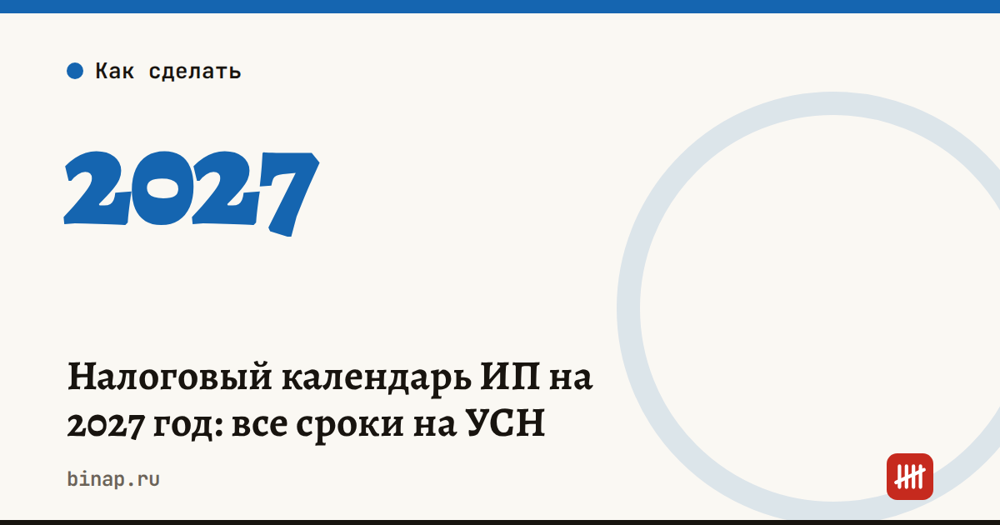

Налоговый календарь ИП на 2027 год: все сроки на УСН

Все даты ниже уже перенесены с выходных и праздников: если срок выпадает на нерабочий день, он сдвигается на ближайший рабочий (п. 7 ст. 6.1 НК). Сохраните страницу — мы обновляем её, когда меняются правила.
Коротко
- Единый срок уплаты — 28-е число, уведомления — до 25-го.
- Декларация ИП на УСН за 2026 год — до 26 апреля 2027, налог — до 28 апреля.
- 1% с дохода сверх 300 000 ₽ за 2026 год — до 1 июля 2027.
- Фиксированные взносы за 2027 год — до 28 декабря 2027.
- Уведомление о переходе на УСН или смене объекта с 2028 года — до 31 декабря 2027.
ИП без работников: 8 дат на год
| Дата | Что сделать |
|---|---|
| 26 апреля (пн) | Сдать декларацию по УСН за 2026 год. Подать уведомление по авансу за I квартал |
| 28 апреля (ср) | Заплатить налог по УСН за 2026 год и аванс за I квартал 2027 года |
| 1 июля (чт) | Заплатить 1% с дохода сверх 300 000 ₽ за 2026 год |
| 26 июля (пн) | Уведомление по авансу за полугодие |
| 28 июля (ср) | Аванс по УСН за полугодие |
| 25 октября (пн) | Уведомление по авансу за 9 месяцев |
| 28 октября (чт) | Аванс по УСН за 9 месяцев |
| 28 декабря (вт) | Фиксированные взносы за 2027 год |
Сумму фиксированных взносов на 2027 год устанавливает правительство — мы добавим её сюда, когда она будет утверждена. Взносы можно платить частями в течение года: тогда авансы по УСН уменьшаются сразу. Как это посчитать, мы разбирали в статье сколько платит ИП на УСН 6%.
Если есть работники: сроки по месяцам
Каждый месяц — две пары дат:
- до 25-го — уведомление по НДФЛ, удержанному с 1-го по 22-е число, и по взносам за прошлый месяц; до 28-го — уплата;
- до 3-го — уведомление по НДФЛ, удержанному с 23-го по последнее число прошлого месяца; до 5-го — уплата.
| Месяц | НДФЛ за 1–22 число и взносы: уведомление → уплата | НДФЛ за 23-е — конец прошлого месяца |
|---|---|---|
| Январь | 25 янв → 28 янв | — |
| Февраль | 25 фев → 1 мар | 3 фев → 5 фев |
| Март | 25 мар → 29 мар | 3 мар → 5 мар |
| Апрель | 26 апр → 28 апр | 5 апр → 5 апр |
| Май | 25 мая → 28 мая | 4 мая → 5 мая |
| Июнь | 25 июн → 28 июн | 3 июн → 7 июн |
| Июль | 26 июл → 28 июл | 5 июл → 5 июл |
| Август | 25 авг → 30 авг | 3 авг → 5 авг |
| Сентябрь | 27 сен → 28 сен | 3 сен → 6 сен |
| Октябрь | 25 окт → 28 окт | 4 окт → 5 окт |
| Ноябрь | 25 ноя → 29 ноя | 3 ноя → 5 ноя |
| Декабрь | 27 дек → 28 дек | 3 дек → 6 дек |
НДФЛ, удержанный с 23 по 31 декабря, уведомление и уплата — не позднее последнего рабочего дня года.
В январе, апреле, июле и октябре уведомление по взносам за прошлый месяц не подают: его заменяет расчёт по страховым взносам, который сдают до 25-го. Подробнее — в статье про уведомления по ЕНП в октябре.
Отчёты работодателя
| Отчёт | Сроки в 2027 году |
|---|---|
| Расчёт по страховым взносам (РСВ) | 25 января (за 2026 год), 26 апреля, 26 июля, 25 октября |
| 6-НДФЛ | 25 февраля (за 2026 год), 26 апреля, 26 июля, 25 октября |
| ЕФС-1: стаж и взносы на травматизм за 2026 год | 25 января |
| ЕФС-1: взносы на травматизм за квартал | 26 апреля, 26 июля, 25 октября |
| ЕФС-1: приём, увольнение, перевод | не позднее следующего рабочего дня после приказа |
Что ещё не забыть
- Патент. Срок оплаты зависит от длительности патента: до 6 месяцев — вся сумма до окончания срока; от 6 до 12 месяцев — треть в первые 90 дней, остальное до окончания срока. Про риски патента — в статье про лимит дохода на ПСН.
- Имущественные налоги ИП как физлица — до 1 декабря 2027 года по уведомлению из налоговой.
- Смена режима. Уведомление о переходе на УСН или смене объекта с 1 января 2028 года — до 31 декабря 2027. Выбрать объект поможет калькулятор УСН.
Оговорка про праздники
Мы учли праздники по Трудовому кодексу. Правительство каждый год переносит часть выходных отдельным постановлением — например, может сделать нерабочим 31 декабря. Когда постановление о переносе выходных в 2027 году выйдет, мы сверим даты и обновим календарь.
Частые вопросы
Что будет, если заплатить на день позже? Начислят пени за каждый день просрочки. Если опоздать с уведомлением, налог может не списаться с ЕНС вовремя — тогда тоже пени.
Нужно ли подавать уведомление по фиксированным взносам ИП? Нет. Взносы за себя ИП платит без уведомления.
Можно ли заплатить раньше срока? Да. Деньги, внесённые на ЕНС заранее, спишутся в дату уплаты.
Когда сдавать декларацию по УСН ИП, если деятельность прекращена? До 25-го числа месяца, следующего за месяцем, в котором прекращена деятельность на УСН.